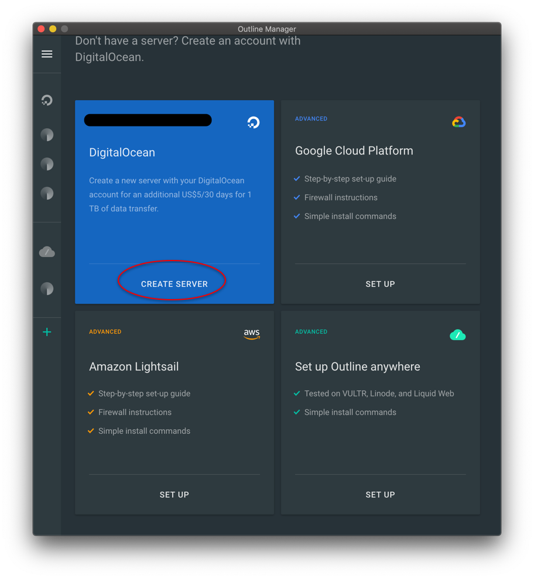
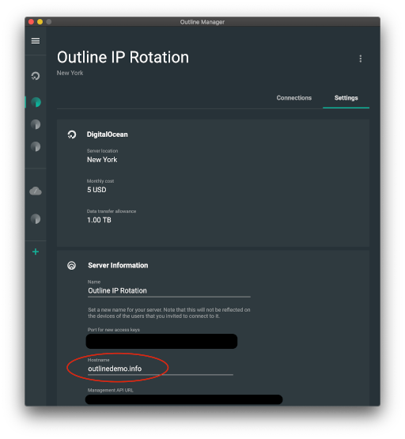
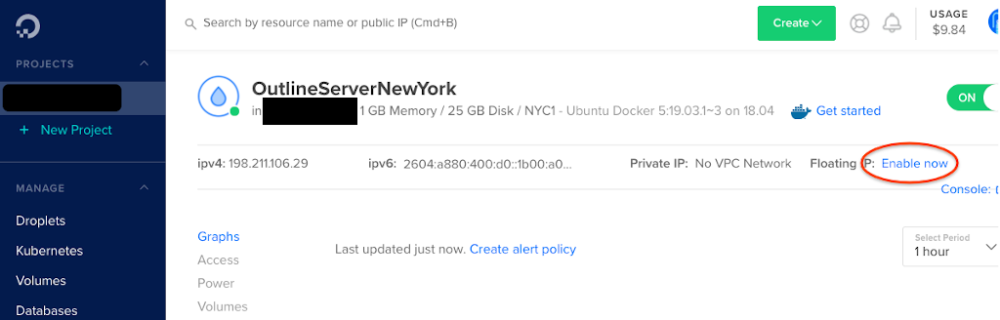
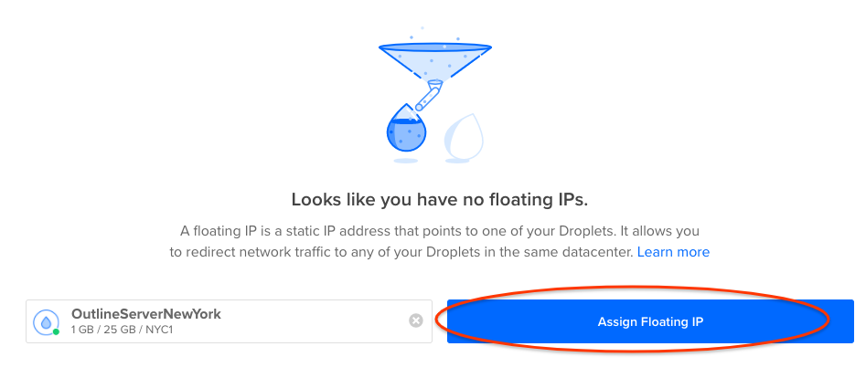
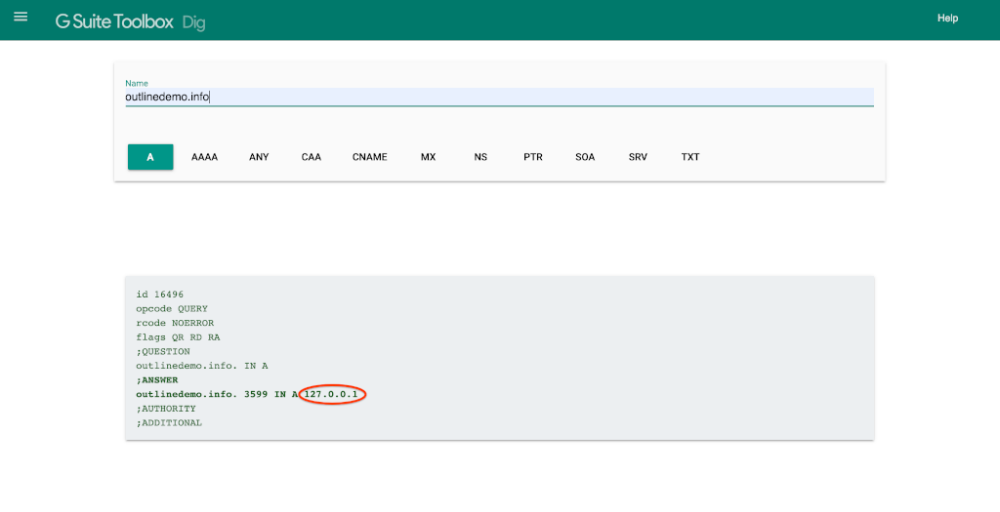

Set Up a Blocking-Resistant Server With Floating IPs
Introduction
Outline servers can sometimes face the problem of being discovered and blocked
from highly censored networks. It's possible and not too difficult to recover a
blocked server if it was set up correctly. We will do this using DNS, the
Internet technology which translates domain names (like getoutline.org) to
physical IP addresses (like 216.239.36.21), and Floating IPs, a cloud feature
which lets you assign more than one IP address to an Outline server.
Requirements
There is a low level of technical skill needed to follow this guide. A basic understanding of DNS is helpful, but not required. See the MDN guide on domain names for an introduction.
To have a concrete example we will use DigitalOcean and Google Domains, but any cloud provider which allows assignment of IP addresses (e.g. Google Cloud or AWS Lightsail) and any domain registrar (e.g. AWS Route 53) will work just as well.
Instructions
-
The following list summarizes the steps to rotate the IP address of a server:
-
Purchase a domain name.
-
Point the domain name to our server's IP address.
-
Issue access keys using the domain name.
-
Assign a Floating IP to the server's Droplet.
-
Change the domain name to point at the new IP address.
Create an Outline Server on DigitalOcean
If you have a running DigitalOcean server, skip to the next step.
-
Open Outline Manager and Click "+" at the bottom left to enter the server creation screen.
-
Click "Create Server" on the "DigitalOcean" button and follow the directions in the app.

Make a Hostname for Your Server
-
Navigate to Google Domains and click "Find the perfect one".
-
Enter a domain name in the search bar and choose a name. We used
outlinedemo.infoas an example. -
Navigate to the DNS tab on Google Domains. Under "Custom Resource Records", type your server's IP address in the field marked "IPV4 address".
-
Navigate to the "Settings" tab for your server in Outline Manager. Under "Hostname", type the hostname you purchased and click "SAVE". This will make all future access keys use this hostname instead of the server's IP address.

Change the Server's IP address
-
Navigate to your server on DigitalOcean's "Droplets" page.
-
Click "Enable Now" in the top right of the window next to "Floating IP".

- Find your server in the list of Droplets and click "Assign Floating IP".

-
Navigate back to the DNS tab on Google Domains.
-
Change the IP address as before, but this time with the new Floating IP address. This may take up to 48 hours to take place, but often it only takes a few minutes.
-
Navigate to Google's Online DNS tool and enter your domain name to see when the change in the last step took place.

Once this change propagates, clients will now connect to the new IP address. You can connect to your server with a new key and open https://ipinfo.io to make sure that you see your server's new IP address.
Conclusion Rotating IP addresses of an Outline server can be a fast way to unblock a server and restore service to clients. For more questions, feel free to comment on the announcement post, visit Outline's support page or contact us directly.